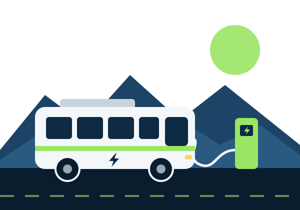
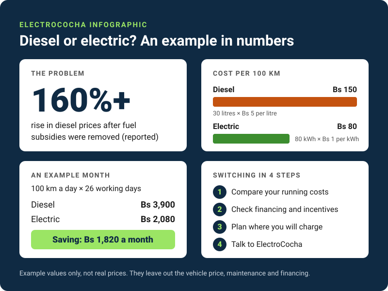

Electric transport for Cochabamba
Fuel prices are climbing. Your route doesn't have to stop.
ElectroCocha helps transport workers and drivers in Cochabamba understand what switching to electric could cost, how it could be financed, and which incentives may help.

The problem
160%+ rise in diesel prices after fuel subsidies were removed (reported).
Bolivia is facing severe diesel and petrol shortages. For a bus or taxi operator, fuel is a major daily cost, so every price jump lands on the people who keep the city moving.
Long queues, blockades and an unreliable supply make it worse. A vehicle that cannot refuel cannot earn.
Transport workers in Cochabamba carry this pressure, and many do not have clear, simple information about the alternatives.
The solution
ElectroCocha explains the switch to electric in plain language, so people can decide for themselves.
-

Costs
Compare the running costs of diesel and electric vehicles with our calculator.
Open the calculator -

Financing
Understand the financing schemes proposed for transport operators.
Read about financing -
Incentives
Learn about the tax incentives proposed for electric vehicles.
Read about incentives -
Charging
See where you could charge in and around Cochabamba.
See the map
The city has proposed electric public transport as a choice for transport workers, not a requirement. ElectroCocha exists to make that choice an informed one.
Diesel or electric at a glance

Read the infographic as text
- The problem: diesel prices rose by more than 160% after fuel subsidies were removed (reported).
- Cost per 100 km: diesel Bs 150 (30 litres at Bs 5), electric Bs 80 (80 kWh at Bs 1).
- An example month (100 km a day, 26 days): diesel Bs 3,900, electric Bs 2,080, a saving of Bs 1,820.
- Switching in 4 steps: compare your running costs, check financing and incentives, plan where you will charge, talk to ElectroCocha.
These are example values. They leave out the vehicle price, maintenance and financing.
Who it is for
-

Bus and taxi operators
Weighing the cost of switching their vehicles.
-

Private drivers
Looking for a way around fuel shortages.
-
Commuters
Who rely on affordable, dependable transport.
-
Local government
Planning the move to electric transport.
Listen to a one-minute summary
No time to read? Listen to what ElectroCocha is about.
Read the transcript
Welcome to ElectroCocha. In Bolivia, fuel shortages, and a rise of more than one hundred and sixty percent in diesel prices, are putting real pressure on transport workers in Cochabamba. Electric vehicles are one possible way forward.
On this website, you can compare diesel and electric running costs with our calculator, learn about the financing and incentives that have been proposed, and see where you could charge.
ElectroCocha is a student prototype, so the figures you see are examples, not real prices. When you are ready, send us a message through the contact form. Thank you for listening.
Ready to see what you could save?
It takes about a minute, and nothing you type is sent anywhere.